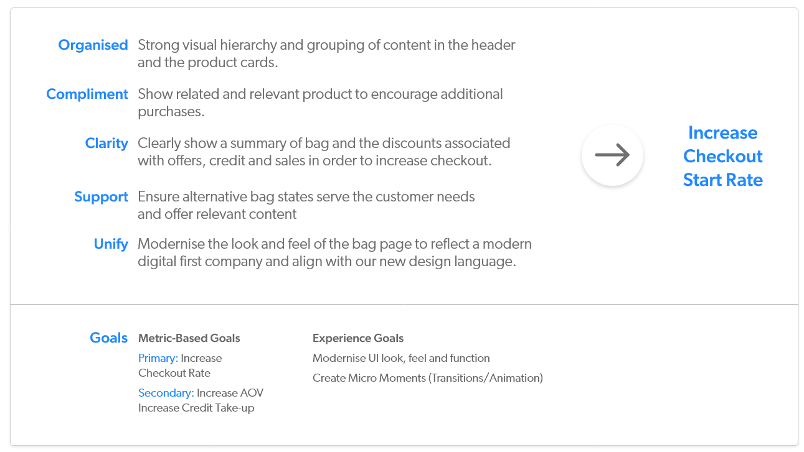
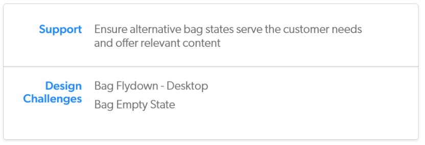

Project Vision
We established 5 design pillars for the project that we would work towards and that supported the primary goal of increasing checkout start rate.
I worked on the 'Support' pillar where I focused on the alternative bag states - the bag flydown and empty states.
Analytics
The analytics team provided some stats on visits to the bag page that we considered during the design phase.
- 21% of bag visits on mobile (276k out of 1.3m) and 27% on desktop (151k out of 554k) see the bag page while logged in
- 13% of bag visits on desktop (74k out of 554k) use the top nav while on the bag page
- At least 6% of desktop bag visits view an empty bag (33k out of 554k)
- 2.4% of bag visits click on "Start Shopping" (50k out of 2m)
Existing Designs
I looked at the existing designs that were on the live sites to analyse what needed changing.
Empty Bag
Noting the 6% of bag visits that see an empty bag, it was clear that customers must be expecting to see something when they click it.
- Were they expecting to see products they had added to bag? Products in bag were cookied for 14 days, after which, the bag was emptied.
- The bag can be shared across devices, had they expected to see the products they had added from another device? These would only be shown if they were signed into their account.
- The copy is not very informative for the above scenarios.
- The "Start Shopping" CTA is not relevant if they had already been shopping and were returning to checkout. Also, it links to the homepage, could the customer be taken somewhere more inspiring?
Bag Flydown
On desktop, a "mini" version of the bag appeared when a product is added to the bag or if the user hovers over the bag icon in the header. I looked into whether competitors used a bag flydown and whether there was a better way of indicating that a product had been successfully added to the bag.
I also considered whether the same functionality could be implemented on mobile to maintain a consistent experience on all platforms.